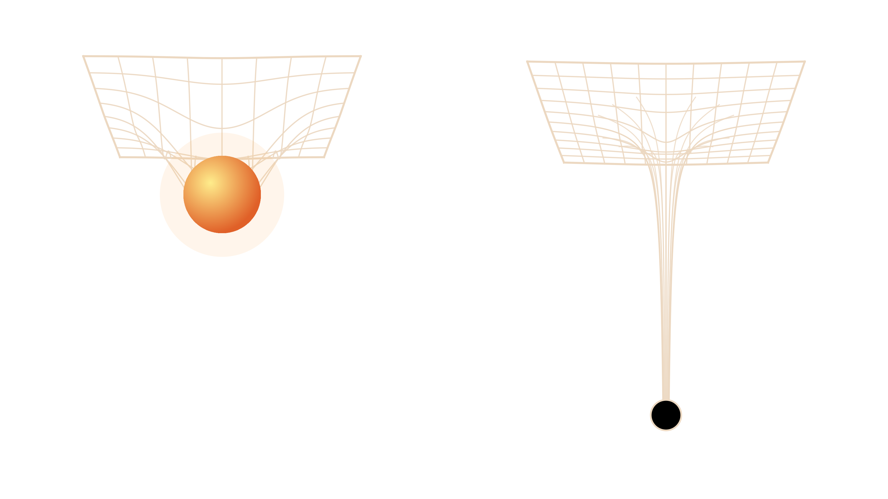

الثقوب السوداء
رحلة إلى أغرب الأجسام في الكون
المقدمة
أكثر الأجسام غموضًا في الكون
تتشكل الثقوب السوداء بفعل أحداث كونية هائلة، وتتحدى ما نعرفه عن الفيزياء والفضاء والزمن.
- ليست فراغًابل كمية هائلة من المادة مضغوطة في حيّز صغير جدًا
- حافة فهمناقوانين الفيزياء المعروفة تتوقف عن العمل عند مركزها
ما هو الثقب الأسود؟
- مادة مضغوطة جدًاتنشأ عندما تنضغط كمية هائلة من المادة في حيّز صغير جدًا
- جاذبية لا يفلت منها شيءحتى الضوء لا يستطيع الخروج منها
- أفق الحدثحدّ خفي يحيط بالثقب، من يعبره لا يعود
- كتلة هائلةمن بضعة أضعاف كتلة الشمس إلى مليارات أضعافها

الشمس: انحناء بسيطثقب أسود: انحناء شديد
٤ ملايينكتلة الثقب الأسود في مركز مجرتنا، بوحدة كتلة الشمس
كيف تتكون الثقوب السوداء؟
معظم الثقوب السوداء النجمية تولد في نهاية حياة نجم هائل
- نجم ضخمأكبر من الشمس بنحو ٢٠ مرة، يعيش على الاندماج النووي
- نفاد الوقوديتوقف الاندماج في اللب، فتنتصر الجاذبية وينهار
- المستعر الأعظمانفجار هائل يقذف الطبقات الخارجية في الفضاء
- ولادة ثقب أسودإن زادت كتلة اللب عن ٢–٣ أضعاف الشمس، لا شيء يوقف الانهيار
وإن كان اللب أخف من ذلك، يصبح نجمًا نيوترونيًا
أول صورة لثقب أسود
صورة حقيقية، لا رسم فني
الصورة: تعاون تلسكوب أفق الحدث (EHT)
الثقب الأسود في مركز مجرة M87: الحلقة غاز ساخن جدًا يدور حوله، والمركز المظلم هو ظله.
٥٥ مليونسنة ضوئية تفصلنا عنه
٦٫٥ مليارضعف كتلة الشمس
٢٠١٧سنة الرصد، ونُشرت الصورة ٢٠١٩
رصدته شبكة تلسكوبات في عدة قارات تعمل معًا كتلسكوب واحد بحجم الأرض